イレギュラーの相談
「被験者から電話があり、治験薬を3日分飲み忘れたと言っています。どうすればよいですか？」
操作
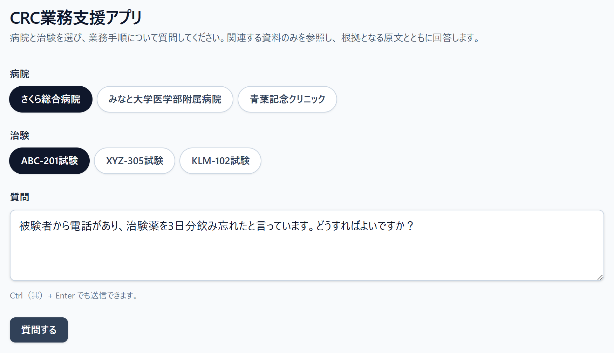
回答の前半：資料に書いてあること
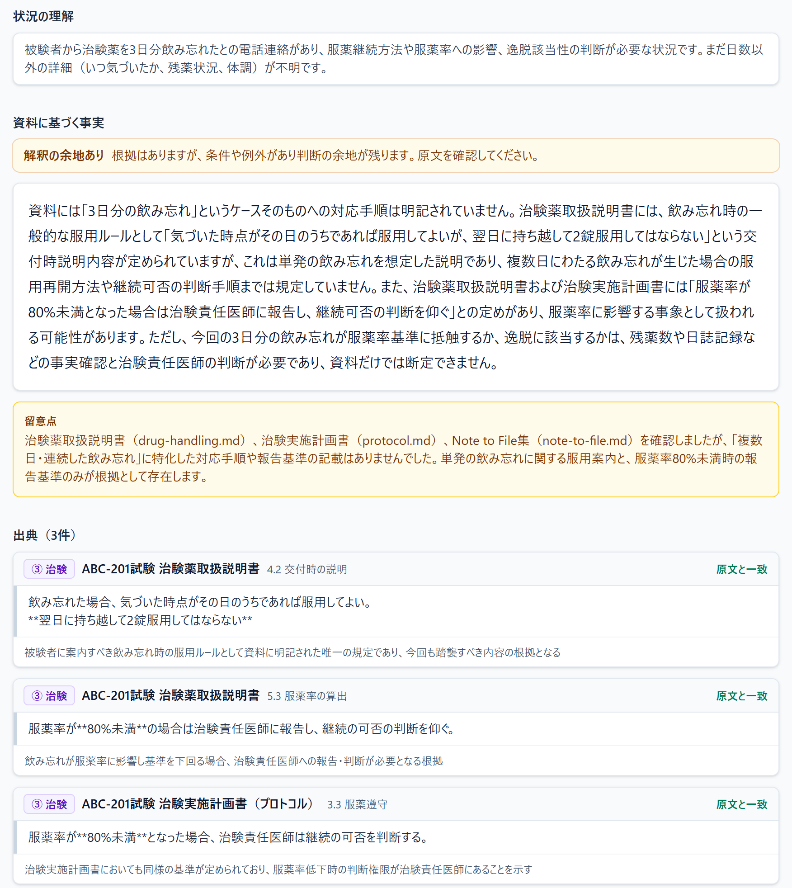
回答の後半：アプリの提案
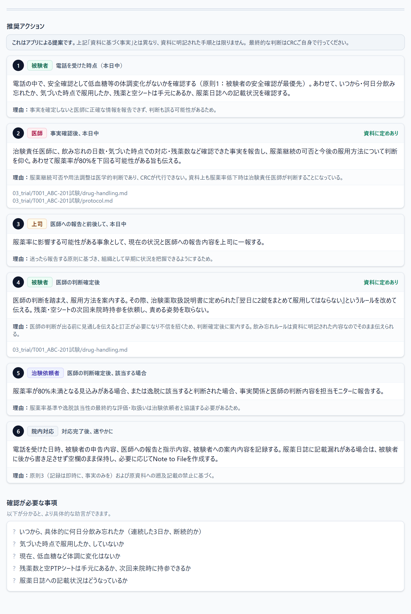
画面全体を1枚で見る
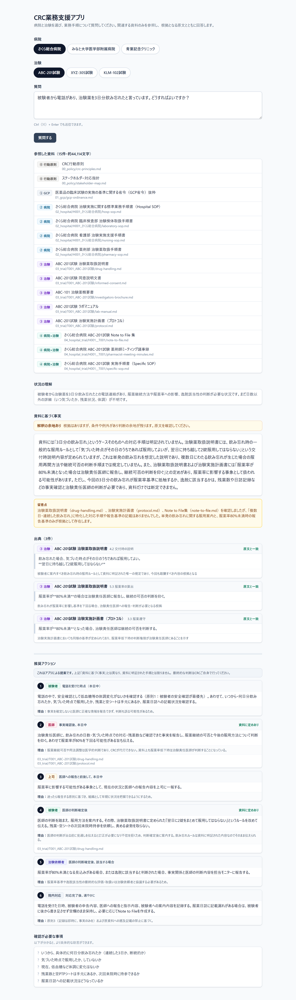
治験コーディネーター向け 業務相談アプリ（試作）の制作記録
やりたいことを文章で書き、AI（Claude）と会話しながら作りました。プログラムも、架空の手順書も、設計書も、書いたのは AI です。人がしたのは、要件を書くこと、AI の質問に答えて方針を決めること、動かして「ここが違う」と伝えることでした。
できあがったもの
CRC が病院と治験をボタンで選び、起きたことを書いて送ります。アプリは、選ばれた病院・治験の資料だけを読んで、次の2つを分けて返します。
なぜ分けるのか。「まず医師に報告し、その後モニターへ」という順序は、SOP には書かれていません。アプリが考えた提案です。規則と提案が混ざると、CRC が医師や上司に「SOP にこう書いてある」と誤って説明してしまいます。そのため画面では二重線で区切り、提案の側に「これはアプリの提案です」と常に表示しています。
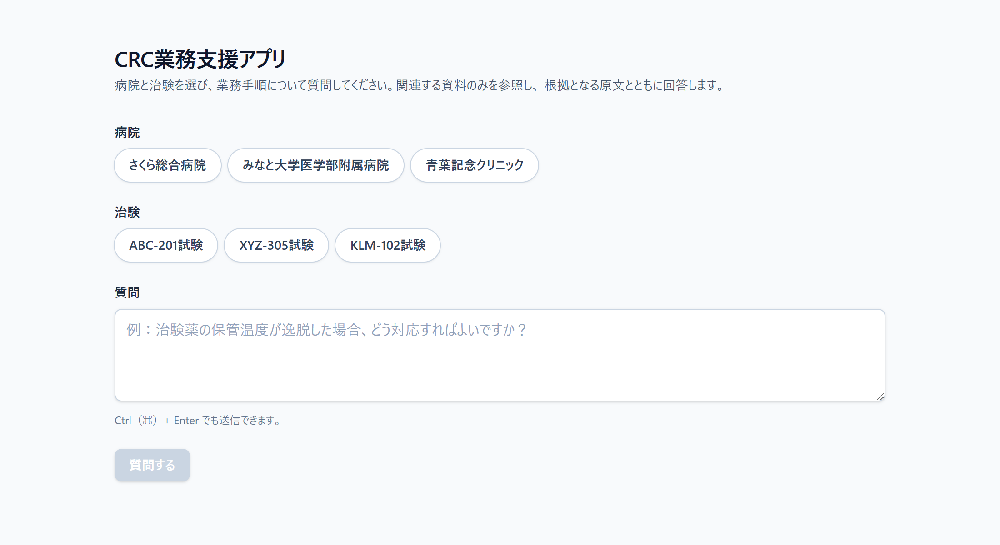
実際に3つ質問しました。どれも、操作した画面、返ってきた回答の順に載せています。回答の上には、読んだ資料の一覧（14〜15件）も表示されますが、長いので省きました。省いていない画面は、各例の最後の「画面全体を1枚で見る」で開けます。
イレギュラーの相談
「被験者から電話があり、治験薬を3日分飲み忘れたと言っています。どうすればよいですか？」
操作

回答の前半：資料に書いてあること

回答の後半：アプリの提案


その病院にしかない事情
「木曜日に被験者が来院しますが、薬剤師が不在です。治験薬を渡せますか？」
操作
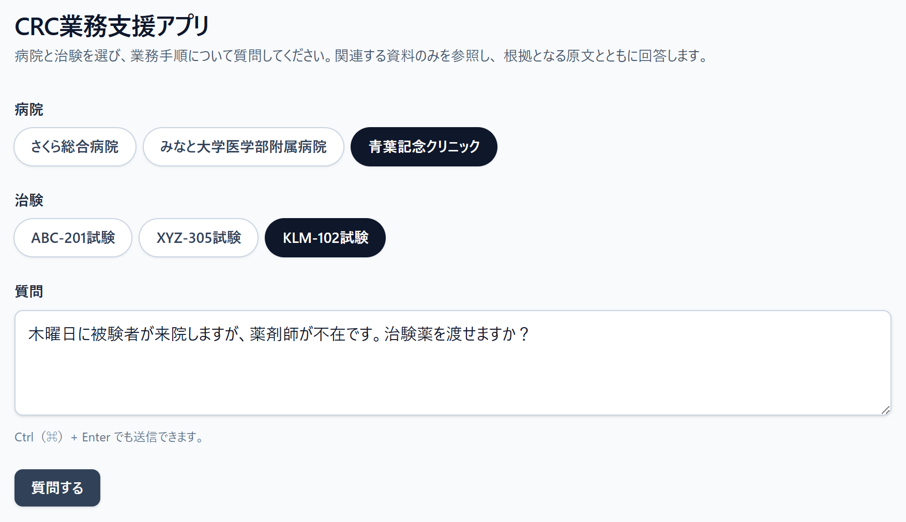
回答の前半：資料に書いてあること
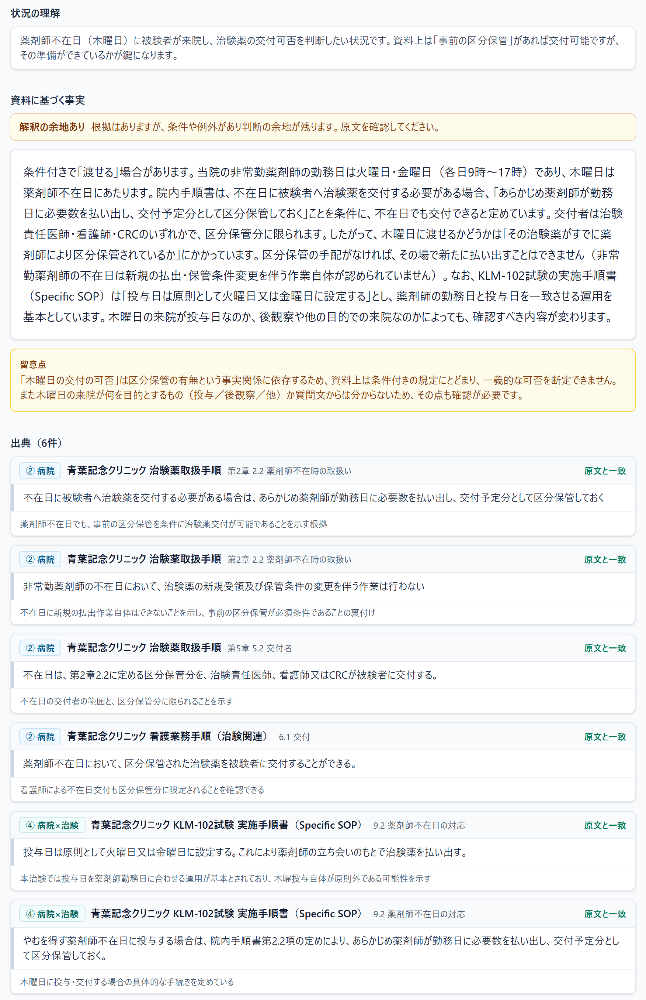
回答の後半：アプリの提案
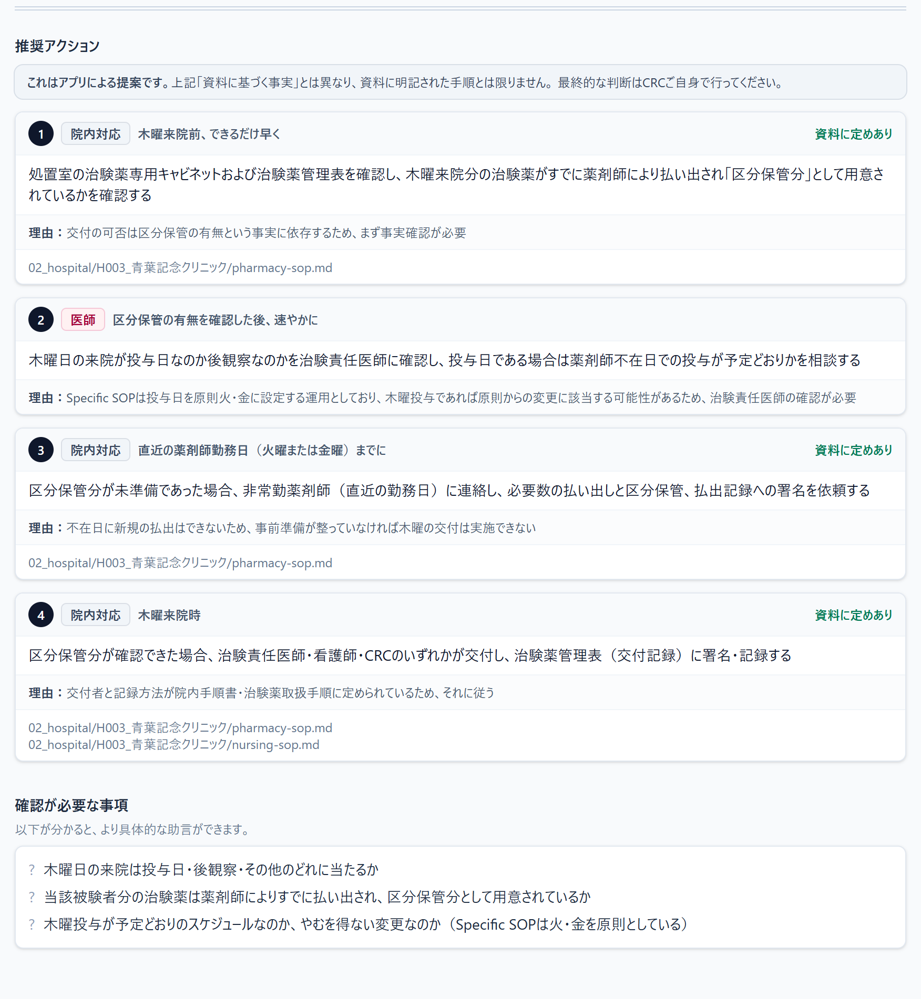
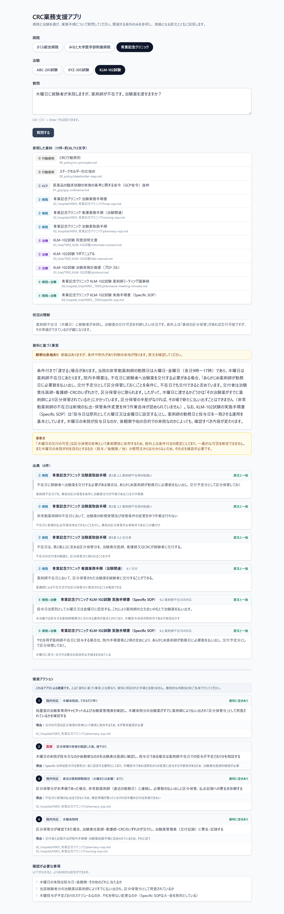
資料に書かれていないこと
「被験者の保険加入の手続きはどのように行いますか？」
操作
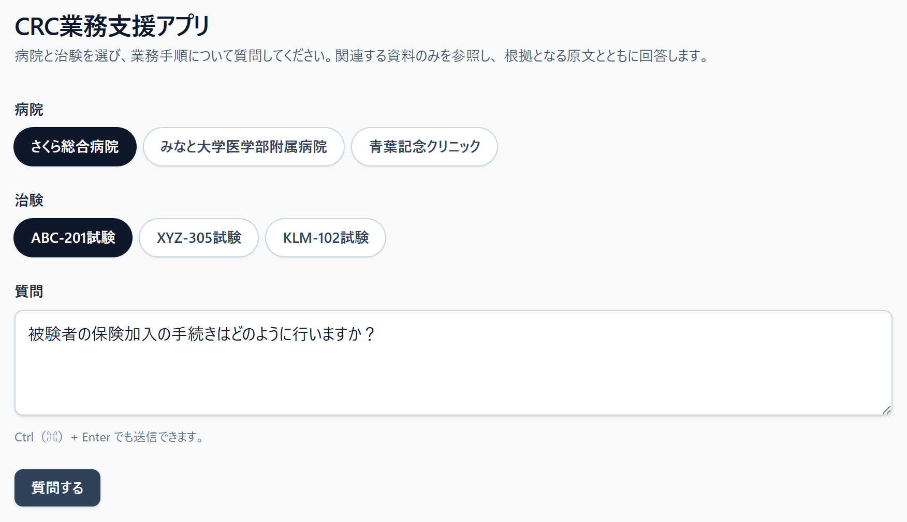
回答
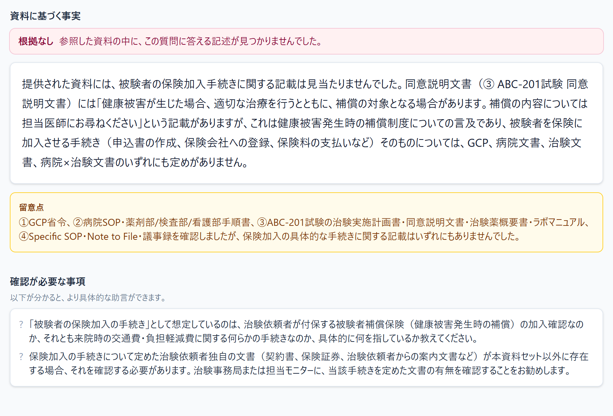
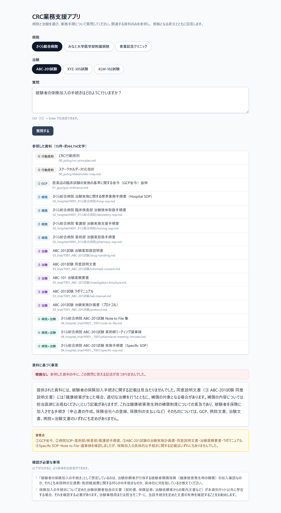
病院・治験・手順書・GCP の条文まで、中に入っている資料はすべて架空です。実データは契約前で使えないため、AI に「ありそうな粒度」で作らせました。病院によって規定が違う、手順書どうしが矛盾している、どこにも書いていない、といった場面をわざと仕込んであります。
なぜ作ったのか
アプリは、ある役割を果たさせるための手段です。先にあったのは「CRC の仕事を、こう支えたい」という考えで、機能はそこから決まりました。ここでは、作者が書いた文章からその考えをたどります。
AI への依頼内容の書き出しはこうです。
このプロジェクトでは、治験業界で働くCRCを支援する業務アプリケーションの開発を行います。
CRC が拠りどころにする資料は、国の GCP、病院の手順書、製薬会社の治験の資料、そして「この病院でこの治験をどう実施するか」を決めた資料の4層に分かれています。最後の層は、要件の言葉で言えば病院＊治験の数だけ存在する
ものです。いくつもの病院と治験を担当すれば、どの資料のどこを見ればよいかを探すだけでも手間がかかります。最初に考えたのは、病院と治験を指定して質問すると、関係する資料だけを読んで、答えと根拠の原文を示してくれるアプリでした。
このとき、一つだけはっきり書いていたことがあります。
論拠となる出展が存在しない、もしくは論拠となる出展は存在するが解釈・判断に一定の余地がある場合は、「出典はないが自信を持った回答」をするのではなく、その旨を誠実に回答する。
一度動くものができたあと、CRC の側から要望が届きました。資料を探すだけでなく、イレギュラーな対応の相談役になってほしい、というものです。作者はこれを、アプリの役割そのものが変わる話として受け止めています。
それまでの構図：ドキュメントの検索代行
本当に期待されていた構図：CRCの業務を支援する秘書・メンター
二つの構図は、作者の発言（会話1、1:15）の文言をそのまま並べたものです。
リポジトリの名前を決めるときにも、作者はこう書いています。
今はドキュメント検索代行的な立ち位置ですが、最終的には、CRCの行動をサポートする秘書とかアドバイザーとかメンター的な立ち位置になってほしいと思っています。
相談に乗るなら、アプリは資料を読めるだけでは足りません。CRC としてどう振る舞うのが正しいかを知っている必要があります。
このようなチャットボットを作る場合、チャットボットは単に「ドキュメント検索代行」ではなく、「よきCRCであること」という役割を負うことになります。この「よきCRCであること」が具体的にどう言うものなのか、は事前に定義しておいて、チャットボットが裏のモデルにリクエストを投げる際に、システムプロンプト等に毎回含めて投げる必要があると思っています。
こうして「CRC 行動原則」の文書が生まれ、回答は「資料に書いてあること」と「アプリの提案」の二本立てになりました。上で見た画面は、この役割を形にしたものです。
作り方の流れ
時刻は実際の会話の記録です。見出しを押すと、下の会話の該当箇所に飛びます。
やりたいことを文章にまとめた「AI への依頼内容」を書いて、AI に渡しました。資料の4つの層（GCP／病院／治験／病院×治験）と、「根拠がないなら正直にそう言う」ことが中心です。
3病院 × 3治験ぶんの手順書・プロトコル・議事録などを AI が書きました。病院ごとに規定が違う箇所、手順書どうしの矛盾、どこにも書かれていない論点を、検証用にわざと入れています。
「資料を探すだけでなく、イレギュラーな対応の相談役にしたい。医師・上司・被験者・依頼者それぞれへの次の行動まで出してほしい」という要望を受けて、設計からやり直しました。「よい CRC とはどう動くか」を AI に教える文書（行動原則）を新しく足しています。
人が決めたこと
コードを書く作業は AI に任せましたが、次のような判断は人がしています。どれも CRC の現場や運用の事情を知っているからこそ出てくる判断で、AI が自分から言い出したものではありません。
「さくら総合」「さくら総合病院」のような表記の揺れで、資料を取り違えないためです。
病院名のリスト、および、治験名のリストは画面にあらかじめ並んでいて、ユーザーはそのボタンを押して選択するだけ、とするのが、ユーザビリティが高く、かつ指定内容を固定化できてよいと思います。
どの病院・どの治験の資料かは、フォルダの分け方で管理します。資料にラベルを書き足す案は採りませんでした。
既存の文書には既存のフォーマットが存在すると予想していて、この業務アプリ単独の要件で勝手にフォーマットに介入するのは難しいと思いっています。
資料を細かく切って検索用の索引を作る方式（RAG）もありますが、更新のたびに作り直しが要ります。治験の手順書は「ただし〜の場合は」という例外が多く、切ると条件が抜け落ちる心配もありました。
各文書は年に10回ほど更新されるそうで、RAG化するとそのたびにデータを入れなおす必要があり微妙なため、まずは「 メタデータで文書を絞ってから全文をLLMに渡す方式（PoC規模なら十分実用的」で作成します。
AI は作り込もうとすると、本来の要件への注意が薄れます。試作では要件を満たすことを最優先にしました。
簡易な実装でよいのでまずは要件の実現に注力したいです。
試作の段階では要望が大きく動きます。細かいテスト仕様を整えても、手間に見合いません。
細かくテストケースを作っておいてリグレッションテストをやって・・とかやっていると、それでうまくいく要素に対して管理の手間が見合わないです。
連絡の順序や判断の原則は業務知識そのものです。プログラムに埋め込むと、CRC が読むことも直すこともできません。文書として置いておけば、「順序が違う」と言われたときに文書を直すだけで済みます。
この「よきCRCであること」が具体的にどう言うものなのか、は事前に定義しておいて、チャットボットが裏のモデルにリクエストを投げる際に、システムプロンプト等に毎回含めて投げる必要があると思っています。
出発点
作者がまずこの文章を書き、AI に渡すところからすべてが始まりました。何を作りたいか、資料がどう分かれているか、アプリに何をしてほしいか、どう進めたいかを書いています。下の会話で「requirement.md」と出てくるのは、この文書のことです。誤字も含めて原文のままです。
# 概要
このプロジェクトでは、治験業界で働くCRCを支援する業務アプリケーションの開発を行います。
# データソース
データソースとして、各種治験の資料が与えられます。具体的には以下を想定しています。
- ①GCP：good crinical practice
- 国が治験に関するベストプラクティスを定めた資料。
- ②病院そのものに関する資料（病院が作成する資料）：
- その病院が制定した文書。治験とは関係なく存在し、CRCが所属する会社が関係を持つ治験の数だけ存在する。
- GCPが上位文書である。
- 文書の例として以下がある。
- hosp sop
- 薬剤科のsop
- 検査科のSOP
- 看護科のSOP
- ③治験そのものに関する資料（製薬会社が作成した資料）
- 新薬を開発して、治験を実施したい製薬会社が定めた資料。病院とは関係なく存在し、CRCが所属する会社が取り扱う治験の数だけ存在する。
- 文書の例として以下がある。
- プロトコル・治験実施計画書
- 治験薬概要書
- 同意説明文書
- ラボマニュアル
- コレクションフローチャート
- 治験薬取扱説明書
- ④その病院で行う治験に関する資料
- CRCが、治験を行いたい製薬会社と、治験を受け入れたい病院をマッチングさせ、いざその病院である治験を実施する、となった際に、「この病院でこの治験をどのように実施するか」を取り決めた資料。
- 病院＊治験の数だけ存在する。
- 「②病院そのものに関する資料（病院が作成する資料）」と「③治験そのものに関する資料（製薬会社が作成した資料）」を上位文書とする
- 文書の例として以下がある。
- specific SOP :
- note to file
- 薬剤師ミーティング議事録
# 機能要件
以下の仕様を満たす業務アプリを作成する
- CRCが、病院名と治験名を指定したうえで、業務手順に関する質問を行う。
- 業務アプリは、以下の処理を行う
- 関連する文書を特定する。つまり、
- ①GCP：good crinical practice：これは常に関連する
- ②病院そのものに関する資料（病院が作成する資料）：指定された病院名に関連する資料のみを特定する
- ③治験そのものに関する資料（製薬会社が作成した資料）：指定された治験名に関連する資料のみを特定する
- ④その病院で行う治験に関する資料：「指定された病院・治験」に関する資料のみを特定する。
- CRCが質問してきた内容に対して、上記の資料を参照し、質問に対する回答と、出展箇所および業務マニュアルの該当箇所の原文を表示する。
- 論拠となる出展が存在しない、もしくは論拠となる出展は存在するが解釈・判断に一定の余地がある場合は、「出典はないが自信を持った回答」をするのではなく、その旨を誠実に回答する。
# 本プロジェクトの進め方について
- 本プロジェクトは、上記で定義した業務アプリケーションの開発のPOCを行います。
- データソースとして、上記に記載した資料は、残念ながら現状手元には存在しません。これは、本プロジェクトの正式な契約締結が未完了であること、データソースのAI利用に関するガイドラインが定まっていないことに起因します。
- しかしながら、本物のデータソースがない状態でありながらも、PoC開発は推進していく必要があります。したがって、本プロジェクトは以下のように進めていきます。
- データソースの作成：
- 上記のデータソースをサンプルで生成します。何かしらあればいいので内容は任せます。実物はpdfだと思いますが、今回はPoCのためmarkdown形式で問題ありません。
- 業務アプリの開発：
- 実際に業務アプリを開発します。上記は機能要件を述べたのみで実装については議論できていませんので、実装段階であらかじめclaude、あなたと議論を交わしてplanを練ったうえで実装に取り掛かりたいで、ここは後ほど議論させてください。
- 使用感のテスト：
- 業務アプリが完成したら、実際に人間が触ってUATを実施します。これは人間がやります。
- フィードバック：
- UAT実施後、ユーザーからのフィードバックを受けて仕様と実装を改修します。このUATとフィードバックのループを何度か回すことによって業務アプリを洗練させていきます。AI への引き継ぎ書
AI は、新しい会話を始めると前の会話の内容を覚えていません。そこで、決まったことをプロジェクトのフォルダに文書として置き、AI が作業の最初に必ず読むようにしています。人の新人に渡す引き継ぎ書と同じ役割です。
| 文書 | 中身 | 書く人 |
|---|---|---|
| requirement.md | 作者が書いた AI への依頼内容。すべての出発点（全文は上に） | 人だけ（AI は編集しない） |
| docs/design.md | 会話で決まった設計と、その理由 | AI（会話のたびに追記） |
| CLAUDE.md | 毎回の前提。このプロジェクトの本質、覆してはいけない判断、資料の置き方 | AI（人が確認） |
| data/00_policy/ | CRC の行動原則と、関係者への連絡の順序（架空） | AI が作り、CRC が直す想定 |
たとえば CLAUDE.md の冒頭には、こう書いてあります。
## このプロジェクトの本質 **CRC業務の相談役。** 単なるドキュメント検索の代行ではない（2026-08-10に要件変更）。 CRCが日常業務で直面するイレギュラーな事象について相談を受け、以下の2つを返す。 1. **資料に基づく事実** — 関連文書を特定し、出典とともに示す 2. **推奨アクション** — 各ステークホルダーへ次に取るべき行動を優先度順に提案 **この2つを混ぜてはいけない。** 「まず医師に報告し、その後モニターへ」といった順序は SOPに書かれておらず、アプリの提案である。規則と提案が区別できないと、 CRCが上司や医師に誤った説明をして実害が出る。
プログラム一式は GitHub（crc-copilot）で公開しています。
会話の全文
会話は記録のまま載せています。省いたのは、編集ソフトが自動で添える「いま開いているファイル」の情報と、API キーの文字列（伏せ字にしました）だけです。AI が裏で行った作業（ファイルの作成、コマンドの実行など）は1行ずつの一覧にして、折りたたんであります。
会話を読み込んでいます…